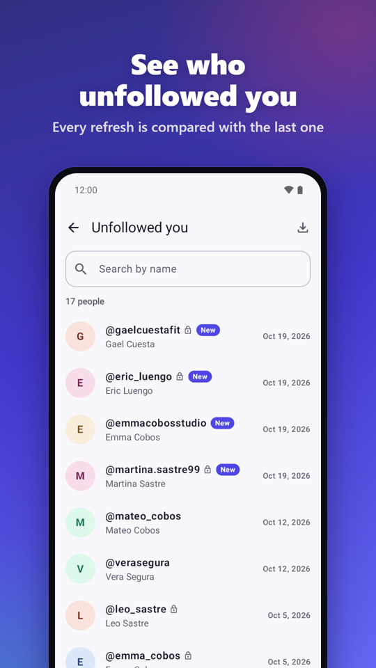
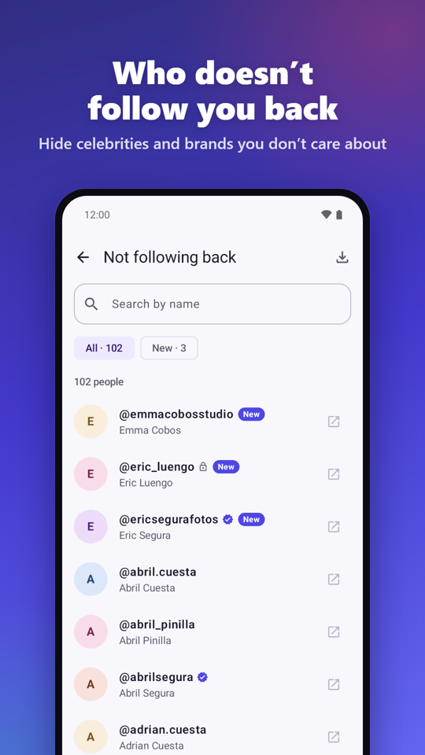
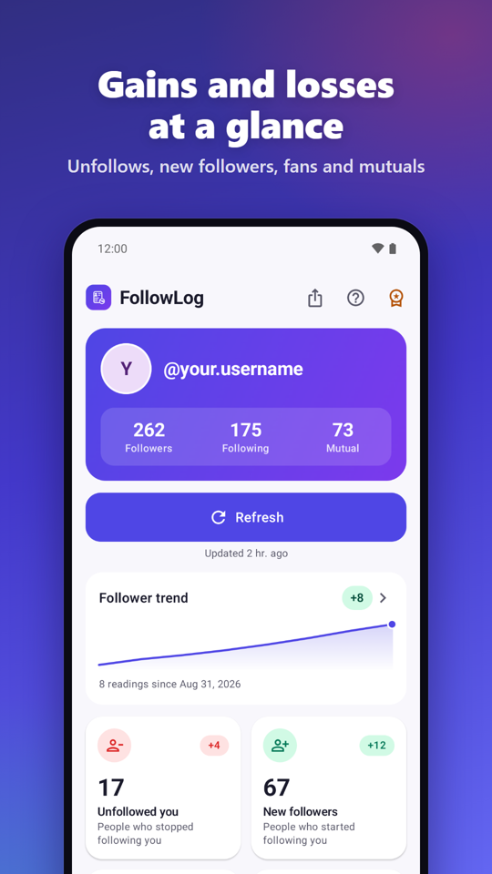
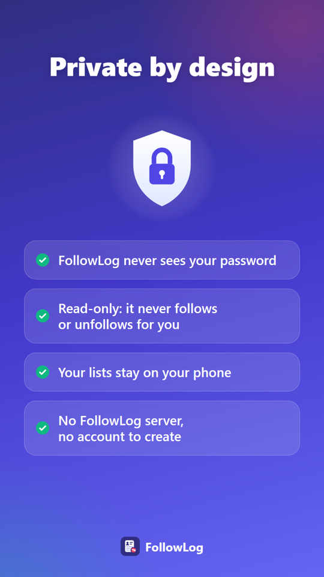
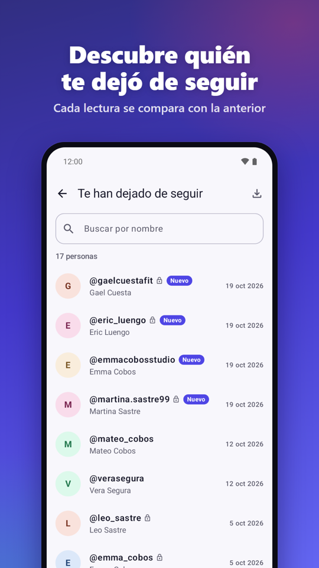
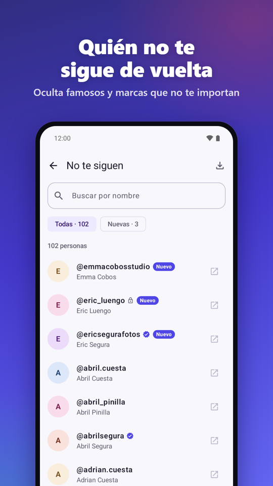
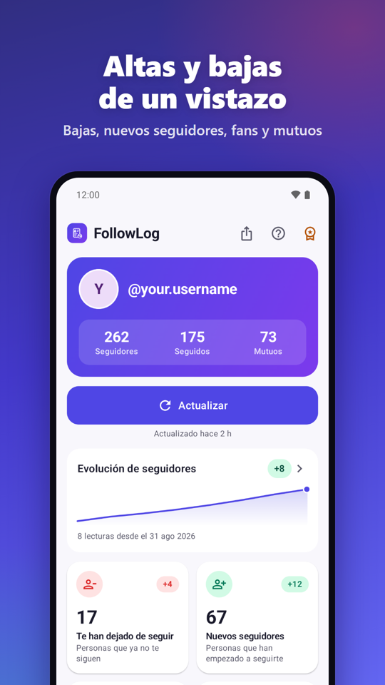
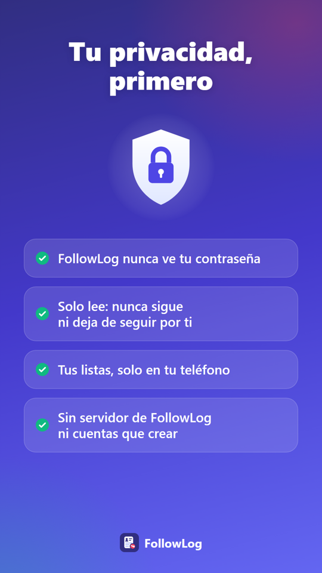

See who unfollowed you
FollowLog compares your followers and following lists every time you refresh: who left, who is new and who doesn't follow you back. Your lists stay on your phone.




What you see
Unfollowers
Who stopped following you, and in which reading.
Not following back
People you follow who don't follow you. Hide celebrities and brands.
New followers and fans
Who started following you, and who you don't follow back.
History and trend
Every reading saved, with a chart and a card for each account.
Private by design
- You sign in on Instagram's own website inside the app. FollowLog never sees, stores or sends your password.
- Read-only: it never follows, unfollows, likes or posts anything for you, and it reads only when you tap Refresh.
- Your lists stay on your phone. There is no FollowLog server and no account to create.
- Delete one account's history, or everything, from Settings at any time.
Questions
How does FollowLog work?
You sign in on Instagram's own website inside the app. When you tap Refresh, that page reads your followers and following lists. FollowLog saves the reading on your phone and compares it with the previous one.
Is my password safe?
FollowLog never sees, stores or sends your password. There is no FollowLog server. Your lists are kept only on your phone and are not included in backups.
Why might someone show up as an unfollower by mistake?
People who deactivate or delete their account, or block you, also disappear from your followers. FollowLog double-checks the accounts that seem to have left (up to 150 per reading), so an incomplete list from Instagram does not create false unfollows.
Instagram asked me to verify, or limited my account. What now?
Open Instagram from FollowLog's Settings, complete the check, wait a while and refresh again. Turn off any VPN. Instagram may limit accounts that use third-party apps.
How do I delete my data?
Settings, Delete all data removes every reading and signs you out. Uninstalling the app also removes everything.
Can it show who viewed my profile?
No. Instagram doesn't share that with any app.
What does Premium include?
A one-time payment with no subscription: no ads anywhere, and refreshing without watching a video.
Contact
Questions, ideas or problems: dsuarezmarra@gmail.com, or "Send feedback" in the app's Settings. Privacy policy.
Descubre quién te dejó de seguir
FollowLog compara tus listas de seguidores y seguidos cada vez que actualizas: quién se fue, quién es nuevo y quién no te sigue de vuelta. Tus listas se quedan en tu móvil.




Qué ves
Unfollowers
Quién te ha dejado de seguir y en qué lectura.
No te siguen
Gente a la que sigues y no te sigue. Oculta famosos y marcas.
Nuevos seguidores y fans
Quién empezó a seguirte y a quién no sigues tú.
Historial y evolución
Cada lectura guardada, con gráfica y una ficha por cuenta.
Tu privacidad, primero
- Inicias sesión en la propia web de Instagram dentro de la app. FollowLog nunca ve, guarda ni envía tu contraseña.
- Solo lee: nunca sigue, deja de seguir, da me gusta ni publica nada por ti, y solo lee cuando pulsas Actualizar.
- Tus listas se quedan en tu móvil. FollowLog no tiene servidor ni te pide crear una cuenta.
- Borra el historial de una cuenta, o todo, desde Ajustes cuando quieras.
Preguntas
¿Cómo funciona FollowLog?
Inicias sesión en la propia web de Instagram, dentro de la app. Cuando pulsas Actualizar, esa página lee tus listas de seguidores y seguidos. FollowLog guarda la lectura en tu móvil y la compara con la anterior.
¿Está segura mi contraseña?
FollowLog nunca ve, guarda ni envía tu contraseña. No tiene servidor. Tus listas se guardan solo en tu móvil y no entran en las copias de seguridad.
¿Por qué alguien puede aparecer como unfollower por error?
Quien desactiva o borra su cuenta, o te bloquea, también desaparece de tus seguidores. FollowLog vuelve a comprobar las cuentas que parecen haberse ido (hasta 150 por lectura), para que una lista incompleta de Instagram no cree falsos unfollows.
Instagram me pidió verificar o limitó mi cuenta. ¿Qué hago?
Abre Instagram desde Ajustes de FollowLog, completa la comprobación, espera un rato y vuelve a actualizar. Apaga la VPN si usas una. Instagram puede limitar las cuentas que usan apps de terceros.
¿Cómo borro mis datos?
Ajustes, Borrar todos los datos elimina todas las lecturas y cierra la sesión. Al desinstalar la app también se borra todo.
¿Puede mostrar quién ve mi perfil?
No. Instagram no comparte ese dato con ninguna app.
¿Qué incluye Premium?
Un pago único, sin suscripción: sin anuncios en ninguna pantalla y actualizar sin ver vídeos.
Contacto
Dudas, ideas o problemas: dsuarezmarra@gmail.com, o «Enviar comentarios» en Ajustes de la app. Política de privacidad.